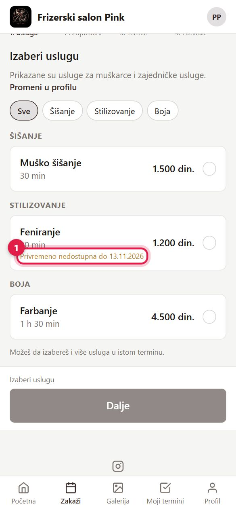

1Otvorite stranicu salona
- Otvorite link salona (iz Instagrama, poruke ili QR koda).
- 1 Kliknite „Zakaži termin".
- 2 Ako nemate nalog, kliknite „Registracija". Na drugoj slici: 1 „Registruj se" — ili prvo pogledajte slobodne termine, a nalog napravite na kraju.


2Napravite nalog
- 1 Upišite ime, prezime, email, telefon i lozinku.
- 2 Kliknite „Registruj se".
- Na email stiže link za aktivaciju (važi 3 dana). Kliknite ga — nalog je aktiviran, prijavljeni ste i vraćate se na zakazivanje.
Nije stigao mejl? Proverite „Promocije" i „Neželjenu poštu". Ako se prijavite pre aktivacije, automatski vam šaljemo novi link. Više u Prijava i nalozi.
Otvori registraciju
3Izaberite uslugu i kod koga
- 1 Kliknite uslugu (može i više njih).
- 2 „Dalje".
- Druga slika: 1 izaberite kod koga želite ili „Bilo ko" za prvi slobodan termin. „Zapamti kao mog frizera" — sledeći put je odmah izabran.


4Usluga „Privremeno nedostupna"
1 Ako piše „Privremeno nedostupna do …", usluga se online ne može zakazati do tog dana. Izaberite drugi dan posle toga ili pozovite salon.

5Izaberite dan i vreme
- 1 Kliknite dan; strelicama idete na sledeće nedelje.
- 2 Kliknite slobodno vreme, pa „Dalje".
Ako je dan pun, prijavite se na listu čekanja — čim se termin oslobodi, stiže vam poruka.

6Kod za popust i potvrda
- Proverite uslugu, zaposlenog, vreme i cenu; „Izmeni" vraća na taj korak.
- 1 Imate kod za popust (npr. sa Instagrama)? Kliknite „Imaš kod za popust?", upišite ga i „Primeni". Ako ste došli preko linka sa kodom, kod je već upisan.
- 2 Kliknite „Zakaži termin".
- Na email stiže potvrda. Ako salon potvrđuje termine ručno, stiže još jedna poruka kad je termin potvrđen.

7Moji termini — pomeranje, otkazivanje, plaćanje
- 1 „Promeni termin" — novo vreme bez otkazivanja.
- 2 „Otkaži" — do roka koji je salon odredio.
- „Plati" (ako salon nudi) — QR kod za mobilno bankarstvo ili uplatnica.
- Druga slika: 1 „Prošli i otkazani" — tu je „Oceni posetu"; 2 „Kalendar" prikazuje termine po mesecima.
Česta otkazivanja u poslednjem trenutku i nedolasci mogu ograničiti online zakazivanje — tada termin zakazujete pozivom salonu.
Otvori moje termine

8Profil
- 1 Omiljeni frizer — uvek ponuđen prvi.
- Obaveštenja preko email ili WhatsApp; tu su i telefon, promena lozinke i odjava.